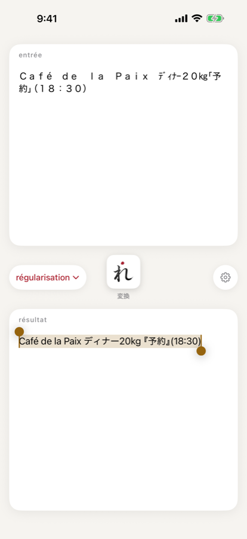

第2章基本の使い方
régu の画面は 1 枚だけです。この章では、画面の各部分と、変換が行なわれるタイミングを説明します。
画面の構成

| 部分 | 内容 |
|---|---|
| entrée(上のカード) | 変換する前の文字列です。直接入力・編集できます。空のときは「ここにcoller」と表示されます。 |
| プリセットのチップ(左) | 選んでいるプリセットの名前です。タップするとメニューが開き、プリセットを選べます(第3章)。 |
| 変換ボタン(中央) | 「れ」のタイルと、その下の「変換」です。entrée の文字列を変換します。 |
| 設定ボタン(右) | 歯車のボタンです。プリセットの一覧を開きます(第3章)。 |
| résultat(下のカード) | 変換した結果です。読み取り専用で、選択してコピーできます。 |
開いたときの自動変換
régu を起動したとき、または他のアプリから régu に戻ったときに、クリップボードの文字列を読んで自動で変換します。
- クリップボードの文字列が entrée に入ります。
- 選んでいるプリセットで変換し、結果を résultat に表示します。
- 結果をクリップボードへ書き戻します。
次のときは、自動変換を行ないません。
- クリップボードの中身が、前に régu が読んだときから変わっていないとき
- クリップボードの中身が、régu が書き戻した文字列のままのとき(後述)
- クリップボードに文字列が無いとき・空のとき
- コントロールセンターや「ペーストを許可」の確認から régu の画面に戻ったとき(régu から離れていないため)
変換ボタン
変換ボタンを押すと、entrée の文字列を、選んでいるプリセットで変換します。結果は résultat に表示され、クリップボードにも書き込まれます。entrée を書き換えたときや、プリセットを切り替えたときに使います。
プリセットを切り替えただけでは、変換し直しません。切り替えた後は変換ボタンを押してください。
entrée が空か、空白・改行だけのときは、押しても何もしません(クリップボードも変わりません)。
「コピーしました」
結果をクリップボードへ書き込むたびに、résultat の右下に「コピーしました」と少しの間表示されます。自動変換のときも、変換ボタンを押したときも表示されます。
結果の選択
résultat は読み取り専用です。変換するたびに、結果の全体が選択された状態になります。結果はすでにクリップボードに入っているので、そのまま元のアプリに戻って貼り付けられます。一部だけを使いたいときは、選択範囲を変えてコピーしてください。
自分が書き戻した文字列は変換しません
régu が書き戻した文字列は、régu を開き直しても変換しません。他のアプリで同じ文字列をコピーし直した場合も、選んでいるプリセットの変換設定が書き戻したときと同じなら変換しません。もう一度変換したいときは、entrée で変換ボタンを押してください。
横長のときの配置
並べ方は、機種や端末の向きではなく、ウインドウの形で決まります。ウインドウが縦長なら上下に、横長なら左右に並べます。横長のときは、左に entrée、中央の列に上からプリセットのチップ・変換ボタン・設定ボタン、右に résultat です。
横長でキーボードが出ている間は、変換ボタンのタイルが小さくなり、「変換」の文字が隠れます。
ペーストの許可
régu はクリップボードを読んで変換するアプリなので、iOS が「ペーストを許可」の確認を出すことがあります。毎回出ないようにするには、iOS の 設定 › アプリ › régu › 他のAppからペースト を「許可」にしてください。
許可しなかったときは、そのコピーの内容は読みません。次に開いても、クリップボードの中身が同じなら読み直しません。変換したいときは、コピーし直してから開いてください。